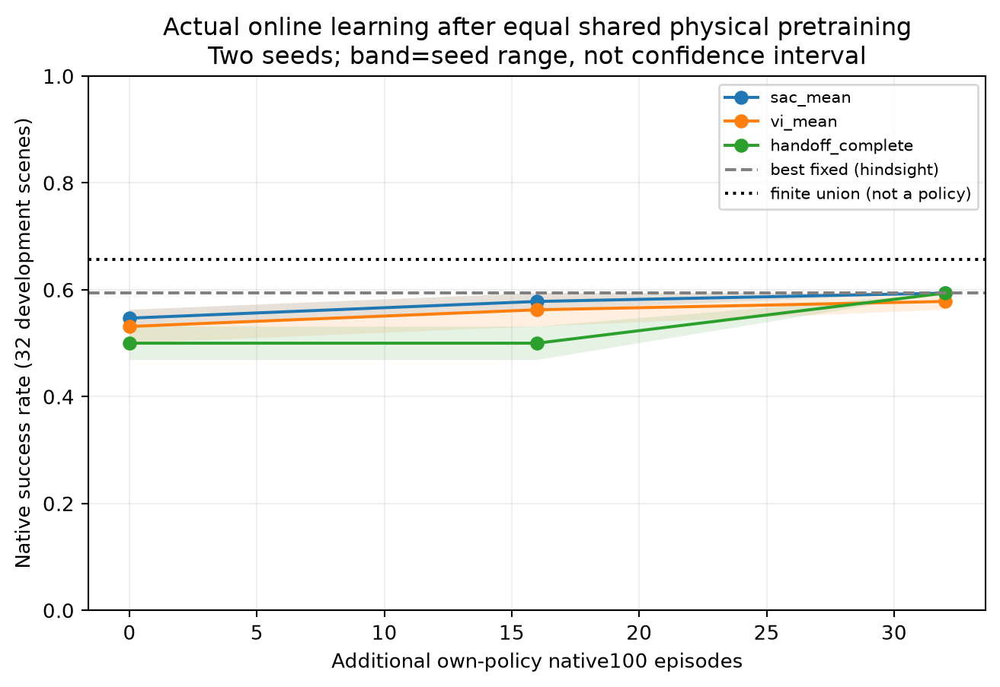
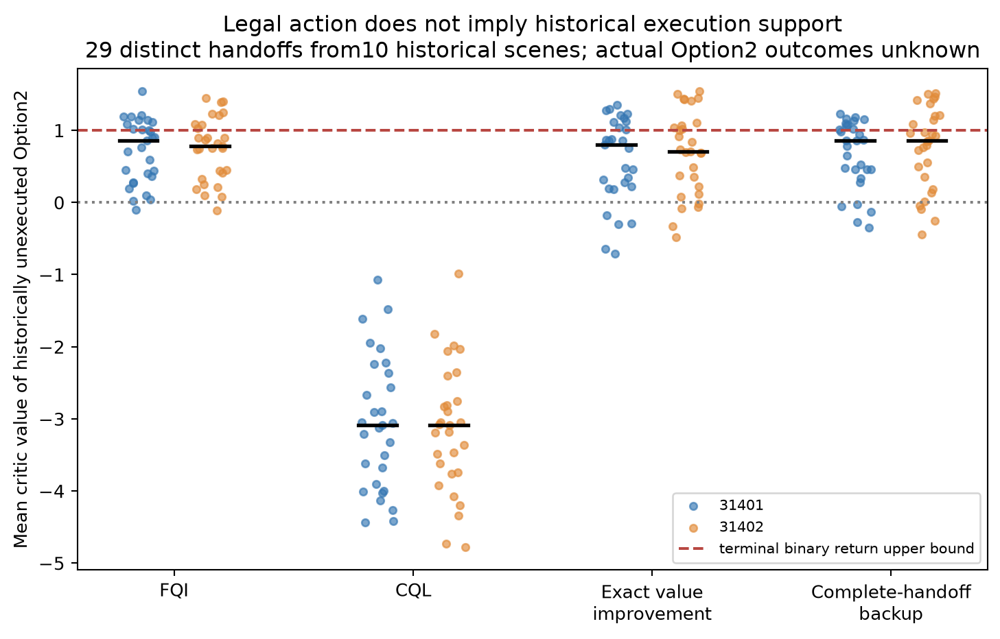

Does measured handoff evidence improve a real skill policy?
Native Peg100 ·96 new natural initial states · two optimization seeds · single RTX3080 · no physical robot
Independent RL gain: UNVERIFIED. The candidate catches up with ordinary SAC; it does not outperform it.
Actual offline→online learning
| Same-budget final policy | Seed31401 | Seed31402 |
|---|
| sac_mean | 19/32 | 19/32 |
| vi_mean | 18/32 | 19/32 |
| handoff_complete | 19/32 | 19/32 |

32 development scene clusters shared by both seeds. Full physical branch evaluation plus48 direct100-step final-policy checks. Candidate vs SAC:1 rescue/1 regression, then0/0. Fixed19/32 is hindsight; train-selected fixed18/32; measured union21/32 is not a deployable policy.
Full tables, cost and paired results · Actual final Option choices and failure typesKnown offline-learning defect, not a new algorithm

New legal Option2 has no execution labels at these historical handoffs. Values above1 violate the terminal binary-return bound. CQL addresses this known support issue; value calibration and final policy benefit are separate.
Exact29-handoff audit · VIAC / USAC / BEE / Q-graph / STAP comparisonWhat is retained
Finite physical action contracts; the strong official controller; true online SAC; mature value/aggregation/conservative controls; complete raw successes and failures. The failed handoff backup remains a negative result, not a renamed contribution.
822 native episodes /82200 steps; 374400 critic updates; 5846 measured planning queries. No sealed tests or restricted field data.
Scientific findings, limits and next decision · All raw/model archives and SHA · Replication entry